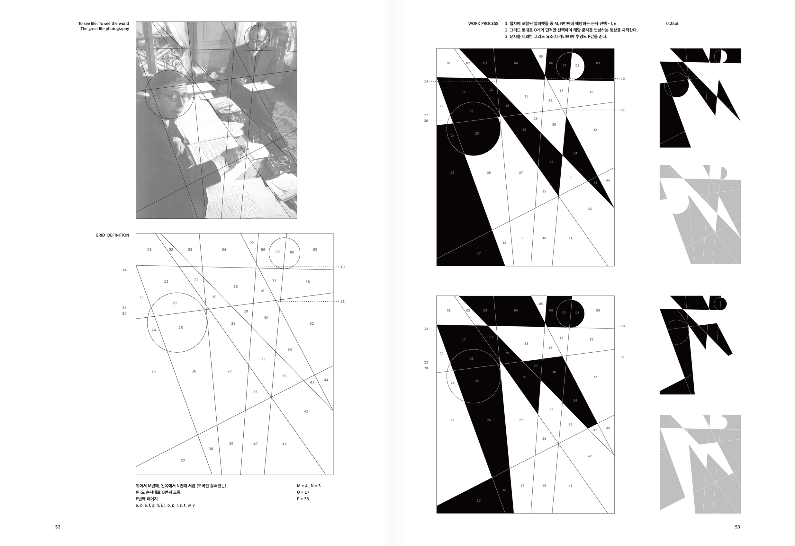

-
우연이 낳은 성공 Accidental Success
문서연 Seoyeon Mun
munseoyeon830@gmail.com
@mun_kite -
사전적 의미의 디자인은 실용 목적을 가진 조형 설계나 도안을 말한다. 공상, 허구와 같은 단어들과는 거리가 멀다. 그러나 창의성 측면에서 디자인 프로세스에서 상상력은 매우 중요하다. 왜냐하면, 끊임없는 창의적 질문을 통한 과정이 결과를 촘촘히 뒷받침하기 때문이다. 이 과정에서 마주치는 크고 작은 오류는 제거의 대상이 되기도 하지만 예상치 못한 영감의 원천으로도 작용한다. 하나의 결과물은 99가지 실험을 거친 100번째 산물일 뿐이다. 역설적이게도 디자이너는 완전한 결과물에 대한 탐구보다 여러 불완전한 시도에 따른 실패 경험에서 오히려 완전함에 가까운 결과를 낳기도 한다. 이런 이유로 오류는 디자인에 차별성을 가져다주고 독창성을 만드는 데 중요한 역할을 한다. 오류를 부정적으로만 바라보기보다는 창조성의 물꼬를 트는 장치로 바라보는 시각이 필요하다. 이 작품은 오류를 만드는 우연성을 작업 안으로 끌어들인다. 각 작업 단계별로 우연성이 개입할 수 있는 장치들을 곳곳에 설치했다. 이런 장치는 작업자조차도 결과를 예측할 수 없게 만든다. 이 작업은 일상적 사물들을 수집하는 일에서 시작해 예측불허의 결과물을 만들어내는 시도이다. The definition of 'design' in the dictionary refers to a formative design or drawing with a practical aim. It is far from the words fantasy and fiction. However, when it comes to originality, imagination is crucial in the design process. This is due to the thorough procedure of asking endless unique questions that backs up the outcomes. Large and minor faults identified during this procedure are eliminated, but they also serve as an unexpected source of inspiration. After 99 tests, one result is just the 100th product. Designers, paradoxically, sometimes generate products that are closer to perfection as a result of the experience of failing through multiple imperfect tries rather than seeking a perfect result. As a result, faults play a vital part in differentiating design and establishing originality. Rather than viewing faults solely negatively, we need to see them as a tool for starting inventiveness. This artwork brings into the work an error-making coincidence. Devices that can interfere by chance were deployed at various stages of the work. Even the operator is thrown off by the outcomes of these instruments. This work is an attempt to produce unexpected effects by gathering everyday objects.
- 